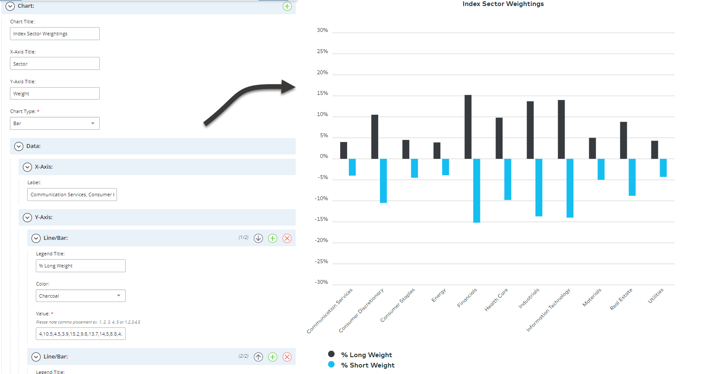

My team and I were given the responsibility to generate charts using data provided by the company to display on the company website.
I decided to create a data form in XML so that even other departments can create their own charts shortening the process of developing a chart manually (which took around an hour).
Using the data form that holds the user's input information, I created a general format that is able to generate a chart based on the user's input using the XPath tool extensively which turns the input into pathways which are then put into my JavaScript file to redraw the chart.
The best part was finding a way to rotate the labels to work in Internet Explorer which required the use of JavaScript. After checking that the user was using Internet Explorer, I used the attribute function targetting only the labels to have them rotated at a 45 degree angle.
This process now only takes 5 minutes to create a chart by creating the data form and pairing it with the general chart format which can be used by any department with no coding knowledge.